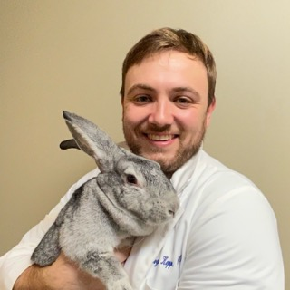
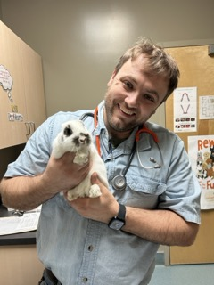
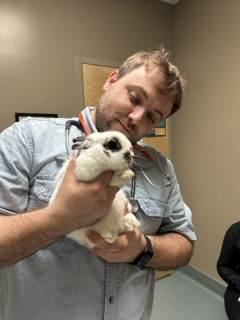
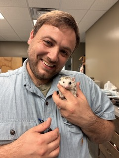
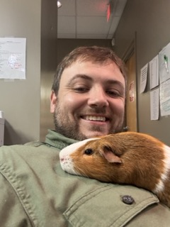
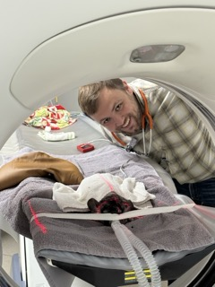
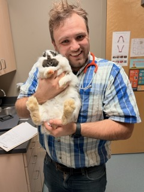

Rabbit Ringworm: What Families Notice
Patchy hair loss, flakes, or itching can be ringworm. What families notice, how vets test for it, and why medicine and home cleaning take time.
October 23, 2026The only board-certified exotic companion mammal vet practicing in Tennessee, seeing patients in Nashville.
At Priest Lake Veterinary Hospital in Antioch, Dr. Kopp sees rabbits, ferrets, guinea pigs, chinchillas, hedgehogs, sugar gliders, and most other companion mammals, including foxes, squirrels, and servals.

Dr. Logan Kopp grew up in Nashville. He earned his Bachelor of Science from Lipscomb University and his Doctor of Veterinary Medicine from the University of Tennessee. He is a Diplomate of the American Board of Veterinary Practitioners in Exotic Companion Mammal Practice, and a Fellow in Companion Animal Pain Management.
He is the only veterinarian currently practicing in Tennessee with that specialty title. In Antioch, TN, he is the rabbit specialist at Priest Lake Veterinary Hospital. Clinics across Middle Tennessee refer rabbits and other exotic companion mammals to him.
He consults for the Veterinary Information Network on exotic companion mammal cases. He is the only Gold-level rabbit-friendly veterinarian certified by the Rabbit Welfare Association and Fund in North America, and he is listed with the House Rabbit Society.
He sees most other companion mammals, including foxes, squirrels, and servals. Primates and non-mammals, including birds, reptiles, and amphibians, are outside this practice.
These are the animals he sees most weeks. If yours is not on the list, call and ask.
Visits are at Priest Lake Veterinary Hospital. Primates and non-mammals, including birds, reptiles, and amphibians, are outside this practice. For an animal he does not see, call the clinic and they can help you find the right referral.
Rabbit, ferret, and guinea pig care in Nashville, along with the other exotic companion mammals referred to Priest Lake.
Most rabbit visits are for GI stasis, dental disease, urinary disease, an RHDV2 vaccine, or pain. Surgery includes appendectomy, abscess surgery, and dental extractions. This is a Gold-level rabbit-friendly practice.
Ferrets are seen for adrenal disease, insulinoma, and gastrointestinal disease, including adrenal surgery.
Guinea pigs, chinchillas, hedgehogs, sugar gliders, rats, mice, degus, hamsters, gerbils, and most other companion mammals, including foxes, squirrels, and servals. Mammary tumor removal is a common surgery in rats.
Guinea pig care · Chinchillas · Hedgehogs · Sugar gliders · Rats and mice · Other small mammals
Laboratory work and digital radiographs are available at the hospital. Skull and dental radiographs are taken in the hospital for dental evaluation. Abdominal ultrasound can be arranged and is interpreted by board-certified veterinary radiologists. CT is arranged with Nashville Veterinary Specialists when a case needs it, and MRI is arranged through a referral facility. Pain assessment is part of every case.
Rabbit surgery includes appendectomy, abscess surgery, abdominal surgery for an intestinal obstruction, liver lobectomy for liver lobe torsion, nasal and ear surgery, and dental extractions. Ferrets are seen for adrenal surgery. Rats are seen for mastectomy when a mammary tumor needs to come off. Spay and neuter, mass removal, and exploratory surgery are also offered, depending on the species and the size of the patient. When a case needs CT, it is arranged with Nashville Veterinary Specialists.
Dr. Kopp sees patients at Priest Lake Veterinary Hospital in Antioch (Nashville), Tennessee. Families come from Nashville, Brentwood, Franklin, Murfreesboro, and across the Middle Tennessee area when they need a rabbit, guinea pig, chinchilla, or ferret vet.






A few notes from people who have seen Dr. Kopp at Priest Lake Veterinary Hospital:
“Dr. Kopp is so knowledgeable and was amazing with HoneyBunn. Even though they were booked solid they make you feel as though you are the only patient there.”
Sierra S.“Dr. Kopp is amazing with rabbits! He’s board certified and truly knows his stuff. My bunny had surgery here and received excellent care. The facility has advanced equipment including CT scanning.”
Jennifer M.“Best place I've ever taken my guinea pigs. Their prices are reasonable... Dr Kopp is fantastic! He is very thorough and has been very helpful with my boys!”
Megan P.See more recent reviews on Google.
Guides for Nashville-area families who share their homes with rabbits, guinea pigs, ferrets, and other small companions.
Patchy hair loss, flakes, or itching can be ringworm. What families notice, how vets test for it, and why medicine and home cleaning take time.
October 23, 2026Flaky fur, itchy skin or thick ear crusts often mean mites. Here is what to watch for and why treatment has to cover home and contacts too.
October 20, 2026Squeaking while peeing, blood in the urine or a guinea pig that stops eating can mean bladder stones. Signs, surgery, recurrence and prevention.
October 2026Case discussions, recent literature, and referral guidance for veterinarians and technicians across Middle Tennessee.
Of 12 lung masses in 608 necropsies, five of six neoplastic cases were metastatic uterine adenocarcinoma.
October 21, 2026Seven recent exotic companion mammal papers: rabbit CT restraint, jaw fractures, bulla ultrasound, glaucoma, ferret blockage, guinea pig culture.
October 2026A 24-ferret AJVR study compared glucometers with a chemistry analyzer at a 60 mg/dL cutoff. Practical options for insulinoma monitoring.
October 2026Yes. Dr. Logan Kopp is Nashville's exotic companion mammal specialist. He is a Diplomate of the American Board of Veterinary Practitioners in Exotic Companion Mammal Practice, and the only veterinarian currently practicing in Tennessee with that specialty title. Appointments are at Priest Lake Veterinary Hospital, 2445 Morris Gentry Blvd, Nashville, TN 37013.
Call Priest Lake Veterinary Hospital at (615) 361-4646. The hospital is a Gold-level rabbit-friendly practice. People usually call about a rabbit that has stopped eating, dental disease, a urinary problem, or an RHDV2 vaccine. During hospital hours, the hospital may be able to see emergency cases. Always call first. After hours, exotic companion mammal consults go through Veterinary Emergency Group in Franklin, Murfreesboro, and West Nashville.
Yes. Dr. Kopp sees rabbits, ferrets, guinea pigs, chinchillas, hedgehogs, sugar gliders, rats, mice, degus, hamsters, gerbils, and most other companion mammals, including foxes, squirrels, and servals. Primates and non-mammals, including birds, reptiles, and amphibians, are outside this practice.
Yes. Call (615) 361-4646 or use the Priest Lake referral form. A history, a recent weight, and any radiographs are useful. The patient goes back to the referring clinic for ongoing care.
Call to book a visit, or send a case.
Priest Lake Veterinary Hospital
2445 Morris Gentry Blvd
Nashville, TN 37013
Phone: (615) 361-4646
Website: priestlakevet.com
Hours
Monday to Friday: 7:30 AM to 7:00 PM
Saturday and Sunday: Closed
Veterinarians in Nashville and across Middle Tennessee refer exotic companion mammals for a second opinion, dentistry, gastrointestinal disease, urinary disease, pain management, and surgery when it fits the species. Patients return to the referring veterinarian for ongoing care.
During hospital hours, Priest Lake Veterinary Hospital can usually accept urgent transfers from primary care veterinarians and may be able to see emergency cases. Always call first at (615) 361-4646. After hours, exotic companion mammal consults go through Veterinary Emergency Group in Franklin, Murfreesboro, and West Nashville. Dr. Kopp consults with those teams.
Most patients come from Nashville and Antioch. Others come from Franklin, Brentwood, Murfreesboro, Hendersonville, Mount Juliet, Spring Hill, Columbia, and Gallatin, across the Middle Tennessee area.